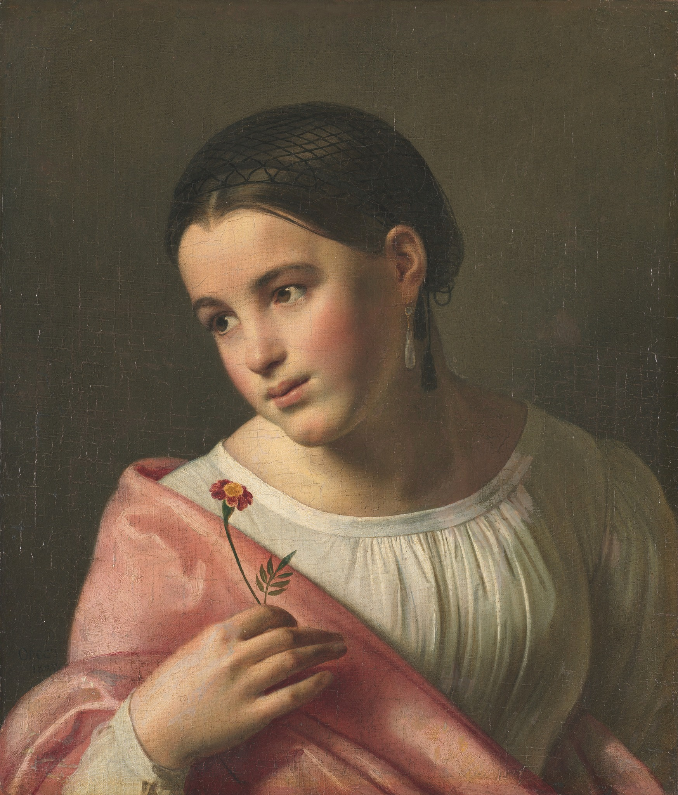
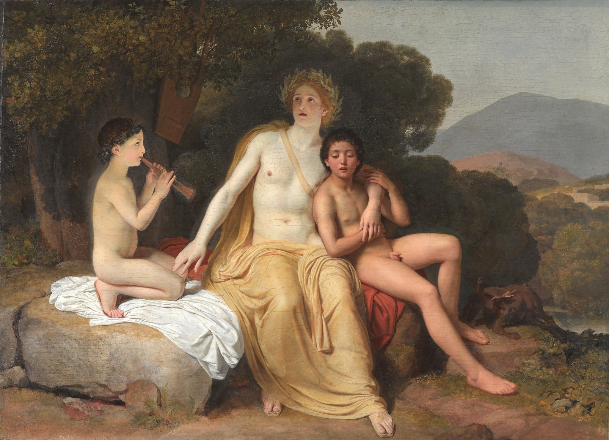
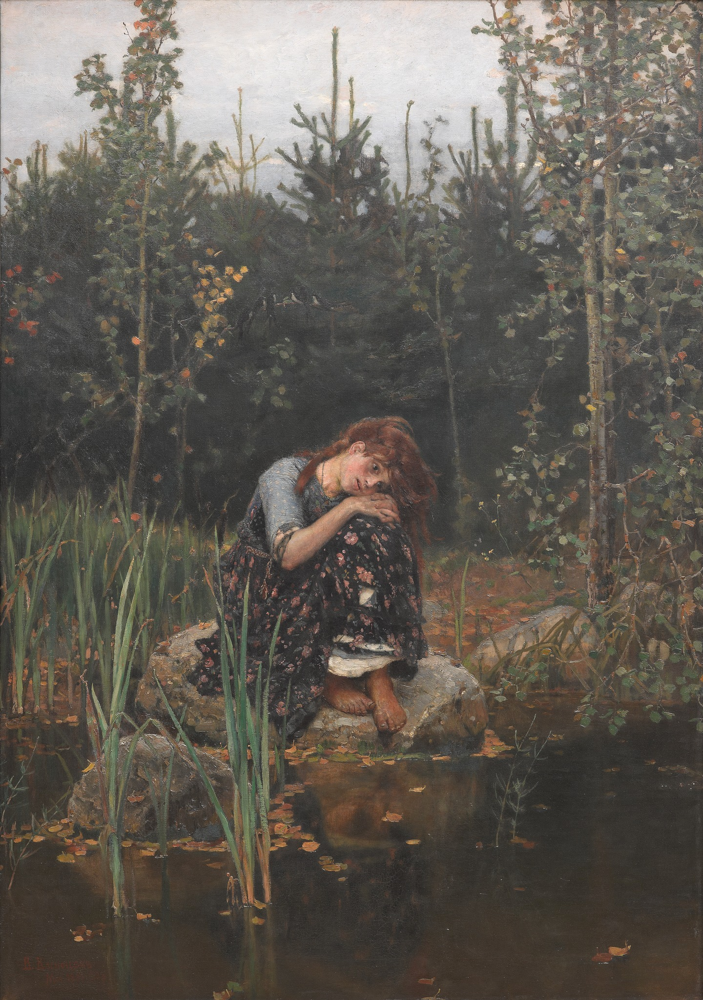
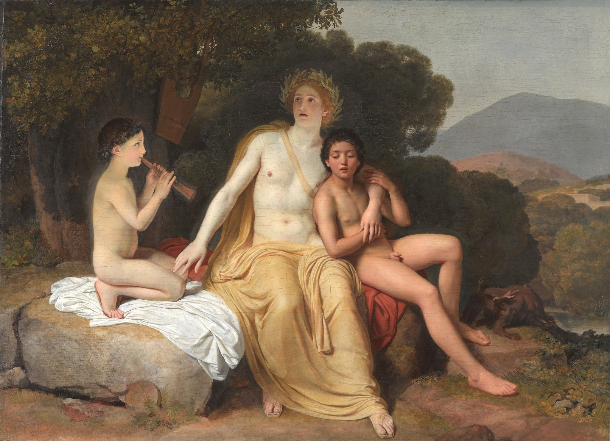
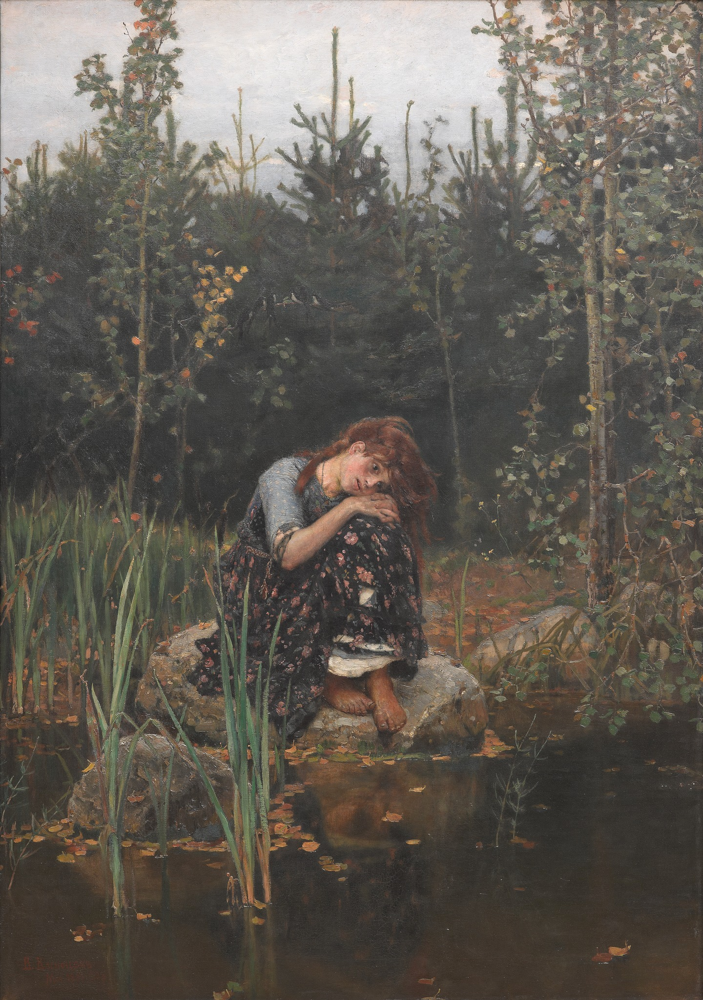

г.Москва, Лаврушинский переулок
Третьяковская галерея
Государственная Третьяковская галерея – крупнейший музей русского искусства,
имеющий мировую известность. Галерея названа по имени московского купца и промышленника Павла Михайловича
Третьякова (1832–1898), коллекционировавшего с 1856 произведения современных ему художников, желая «собрать
русскую школу как она есть в последовательном своем ходе».

 


